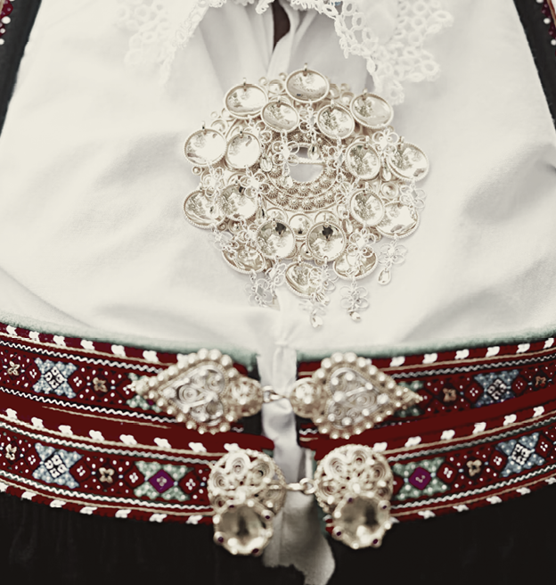

Lagom in Swedish
Means Just Enough In English
Nordic folk dance traditions recognized by UNESCO focus on the integral connection between music, song, and dance, often passed down through oral tradition. Key inscriptions include the lively Setesdal dance/song in Norway and the fiddling practices of Kaustinen in Finland, highlighting community-based, traditional expression.